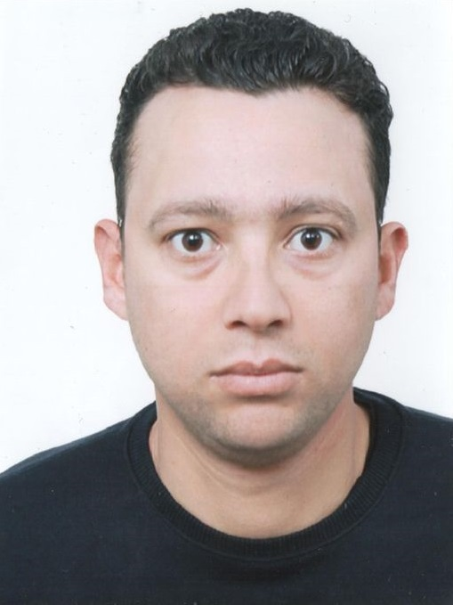

Qui suis-je ?
Diplômé d'un master 2 "Reseau informatique et telecommunication" (Programme dans l'ecole national d'electronique et de télécommunication ENET'COM), j'ai plusieurs experience dans le domaine de resaux telecommunication, maintenant je me tourne ensuite vers le développement informatique et les thématiques liées au web .
Télécharger mon CVInformations de contact
Nom :
Bassem Ltaief
Adresse :
Rue de Gabes KLM 9 cité Thyna Sfax
Téléphone :
(+216) 22 083 907
Mail :
Permis :
B